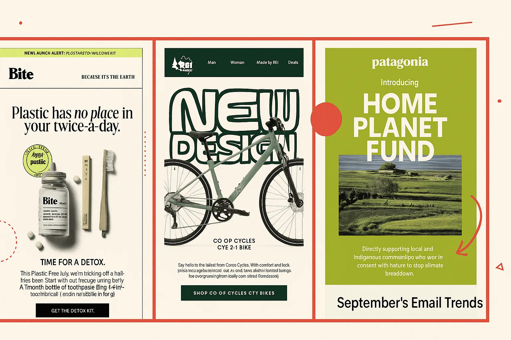
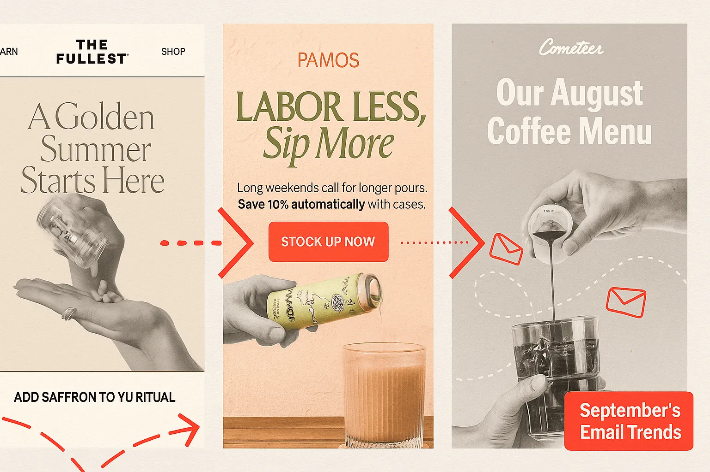
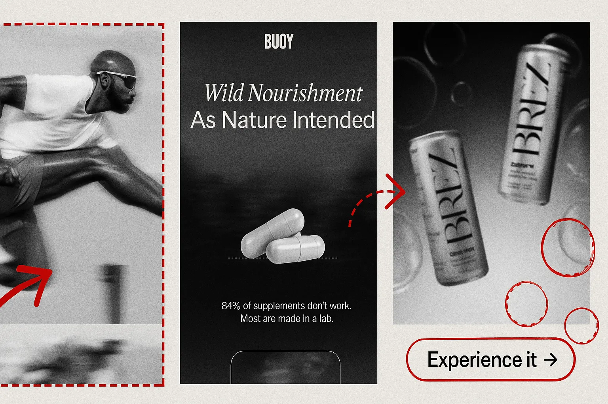

You can tell last month’s inbox got a therapist.
After summer’s email designs with loud colors and look-at-me styling, brands collecting September emails collectively decided to take a deep breath, light a eucalyptus candle, and write in their journal: “We’re chill now.”
The vibe? Polished. Playful. Practical. Or, if you prefer your adjectives less pretentious and lacking alliteration: clean, funny, and trying its best not to have a mental breakdown before Q4.
September was full of brands trying to help you, not sell to you. Patagonia wants to heal the planet, Bite wants to heal your mouth, and REI redesigned something that was already fine — but now it’s sustainable, which made other email makers happy enough to save it.

Even the Labor Day emails were like, “Hey, no pressure, but if you want to spend money, that’d be emotionally mature of you.”
On the photo front, not a single AI-generated hand in sight. Just honest-to-God human hands pouring, pouring, and more pouring. The product shots were less studio-staged as we’ve seen in prior months, bringing back that more casual feel that you may encounter in real life. And there were noticeably fewer models this time around that took center stage (though, Jimmy Fallon did catch our eye).

Happily, compared to 2024’s September most-saved emails, the month prior to Halloween finally figured out how to acknowledge fall without dressing up like a pumpkin-spiced latte. Back-to-school? Sure, but it’s about personal growth. Seasonal stress? Sip on something and take some vitamins. Upcoming day off work? Ditch the corny pumpkin patch visits for self-care.
That may have also been helped by the dominant colors this month, looking like they were pulled from a boutique hotel in Copenhagen: muted sage, creamy beige, soft lavender, mossy greens, and a dash of yellow for serotonin. A nice transition to fall with a bit of shyness away from being too bold.
Even the discounts are shy now. “Start your ritual.” “Join the flock.” “Calm is calling.”
It’s all very ‘gentle cult recruitment but make it brand-safe.’ And that’s because trust is the new urgency. The best-performing emails assume you’re already in love and just need a little nudge.
As for new trends, the biggest one we’re seeing right now is the blur. Not as in Song #2 (which is still one of my favorites and acutely played into our presentation at SaaSiest Amsterdam a couple of weeks ago), but rather as motion blurs. Brez, MeUndies, Lululemon, Buoy, and Verb are all blurring the hell out of their visuals. This isn’t bad Photoshop; it’s intentional.

Blurs are doing three very specific things right now: Creating softness in the scroll. When your inbox is an endless grid of sharp rectangles screaming “SALE,” a little Gaussian glow feels like a nap for your retinas. Brez’s haziness and Verb’s back-in-stock email opaqueness look calm. MeUndies uses it to cause you to focus. LuluLemon captures it in motion to draw your eye to what’s happening.
So if you felt like your inbox got oddly serene last month, it’s because it did. Brands collectively decided to dim the lights, lower their cortisol, and speak in lowercase.
Blurs, beiges, and a sprinkle of emotional stability… that’s the September formula. If this is what Q4 looks like, we might just make it through without rage-deleting our promotions tab.